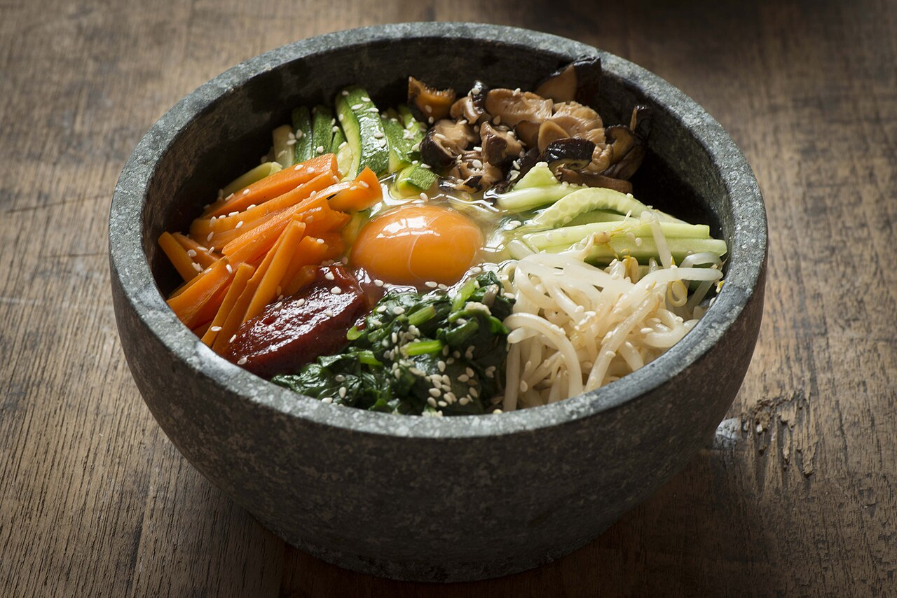
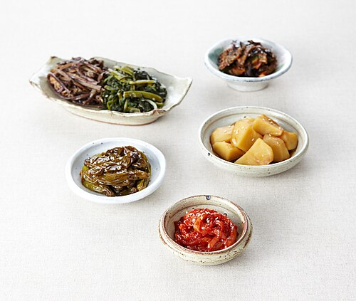
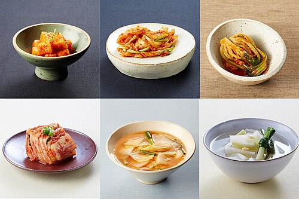
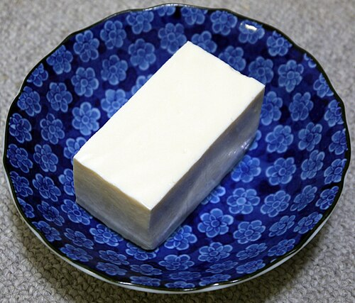
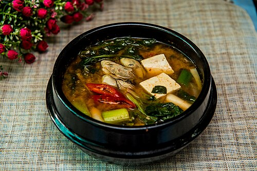

Korea — the bapsang, a plate already divided
A Korean table is built as bap (rice) + guk (soup) + banchan (many small side dishes). The banchan system is, functionally, MyPlate's "half your plate" rule enforced by tradition: nobody eats rice alone.


Bap (steamed rice)
Swap white short-grain for japgokbap — rice cooked with barley, black rice, and beans — to move this wedge toward whole grains.

Banchan (side dishes)
Spinach, bellflower root, bean sprouts, seaweed, radish. Five to eight vegetables in a single sitting — blanched or lightly seasoned, rarely fried.

Kimchi
Fermented napa cabbage and radish. Counts fully as a vegetable and adds live cultures — but it is the single biggest sodium source on the table.

Dubu (tofu) & egg
Soy is the everyday protein; beef or mackerel appear in smaller amounts. MyPlate's "vary your protein routine" is the default here, not an effort.

Doenjang-jjigae
Fermented soybean paste stew with zucchini, onion, and tofu — a protein and a vegetable in the same pot.